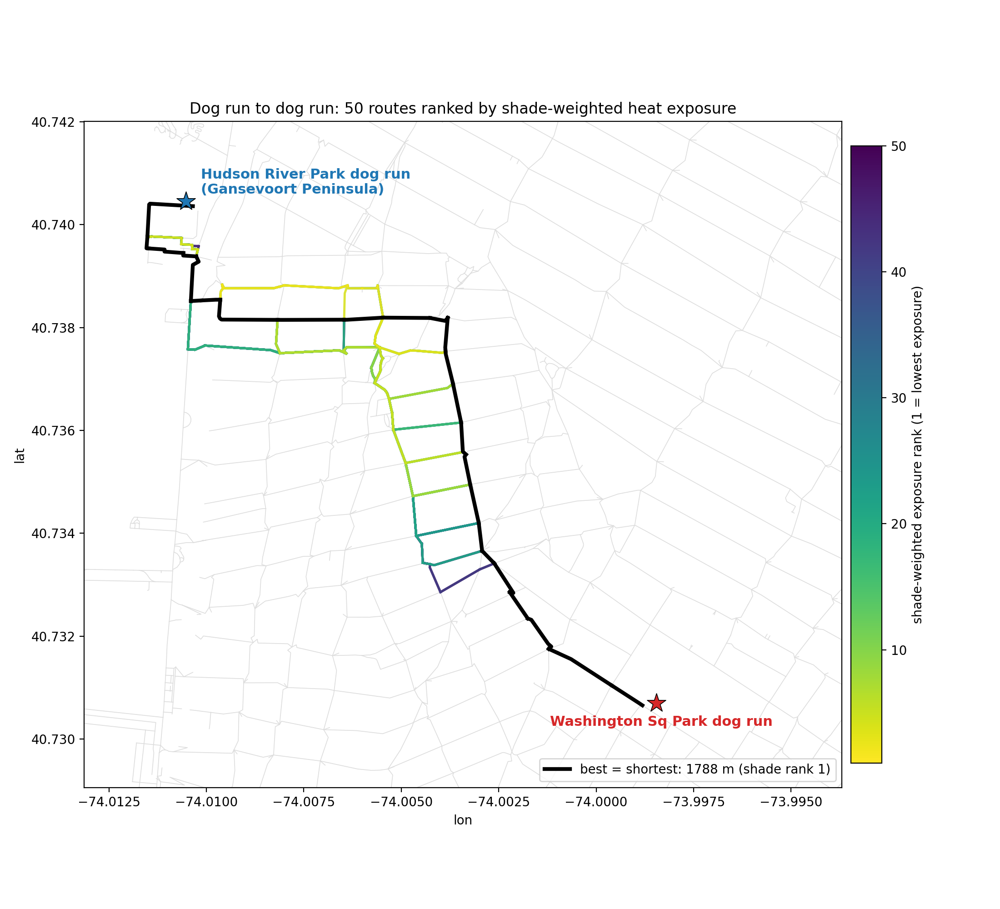
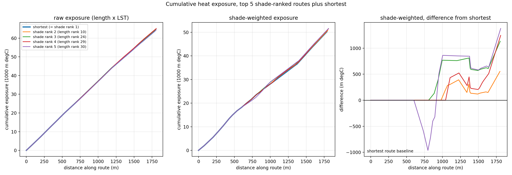

This pilot routes a pedestrian from the Washington Square Park dog run to the Gansevoort Peninsula dog run in Hudson River Park using only two layers: tree shade from the city street tree census and surface heat from a 39-scene Landsat median. No camera or crowd layer is used, by design. The question is simple: across every reasonable route, where does tree cover actually change the walk?


| Shade rank | Length rank | Length m | Mean LST C | Canopy share pct |
|---|---|---|---|---|
| 1 | 1 | 1788 | 35.7 | 77 |
| 2 | 10 | 1800 | 35.8 | 77 |
| 3 | 24 | 1804 | 35.7 | 77 |
| 4 | 29 | 1810 | 36.0 | 77 |
| 5 | 30 | 1811 | 35.6 | 74 |
| 6 | 7 | 1794 | 35.7 | 76 |
| 7 | 41 | 1814 | 35.7 | 74 |
| 8 | 18 | 1802 | 35.8 | 74 |
| 9 | 39 | 1813 | 35.9 | 77 |
| 10 | 9 | 1800 | 35.6 | 73 |
The best route by shade-weighted exposure (Washington Square South, West 4th Street, Jane Street, then the Hudson River esplanade) is also the shortest. Below it, routes that rank well on length fall and leafier routes rise: the route ranked tenth by length rises to second once shade is weighted.
Tree cover changes a route ranking only above a cutoff. At the working shade assumption (a full tree tunnel removes at most forty percent of exposure), a canopy density difference of about eleven trunk-diameter inches per hundred meters always flips a ranking; below roughly three the difference never decides, and between them length and heat decide. This is the regime where trees differentiate routes. On the wide avenues, where frontage canopy is sparse, the same layer rarely clears the cutoff, which is the contrast this pilot exists to show.
Surface temperature is not pedestrian-height air temperature. The canopy proxy is the 2015 street tree census, joined per block face. The shade cap is assumed rather than measured, and the flip threshold depends on it. See also the comfort router and the public pages.